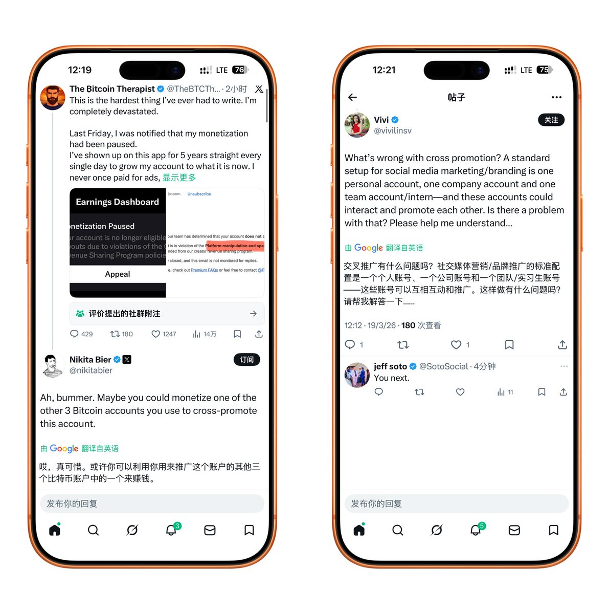

@Nicole_yang88 我感觉我朋友说得有道理



“啊，那很惨了。也许你可以拿你用来推广这个号的其他三个币圈号的其中一个来继续恰烂钱。”
因为在推特上倒大粪而被停掉创作者收益的类人没一个是无辜的 https://t.co/N2vVA1FnOj https://t.co/dTxIcuhddH
因为在推特上倒大粪而被停掉创作者收益的类人没一个是无辜的 https://t.co/N2vVA1FnOj https://t.co/dTxIcuhddH
一位在 X 持续创作5年的内容创作者，近日公开发声称，其账号变现功能在毫无明确解释的情况下被暂停。
事件发酵后，Nikita Bier 的回应却带有明显调侃意味，引发更多争议。
泥伏雷直言不解：自媒体如果不能自我变现，那创作者究竟是在创作，还是在被算法“绑定”，只能替 Elon Musk 打工，分点低保？ https://t.co/ZFsNowe3Vz https://t.co/VFjP53E4Hg
事件发酵后，Nikita Bier 的回应却带有明显调侃意味，引发更多争议。
泥伏雷直言不解：自媒体如果不能自我变现，那创作者究竟是在创作，还是在被算法“绑定”，只能替 Elon Musk 打工，分点低保？ https://t.co/ZFsNowe3Vz https://t.co/VFjP53E4Hg